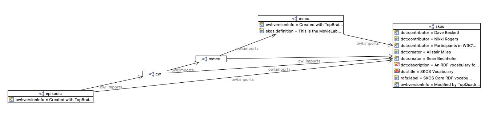

Ontology http://mcw.movielabs.com/ontology/episodic

Imports
imports
SKOS Core RDF vocabulary
http://mcw.movielabs.com/ontology
type
Ontology [owl:Ontology]
imports
SKOS Core RDF vocabulary
http://mcw.movielabs.com/ontology
versionInfo
Created with TopBraid Composer
References
as imports (
http://mcw.movielabs.com/ontology/eidr
)
Generated with
TopBraid Composer
by
TopQuadrant, Inc.